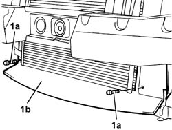
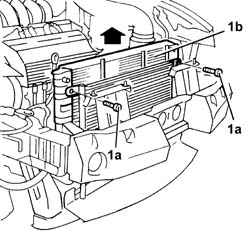
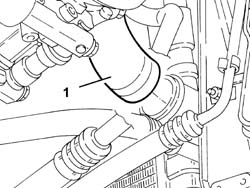
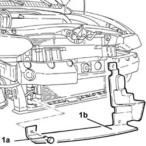
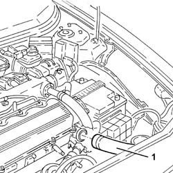
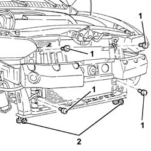
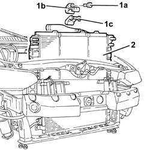

1088B24 engine cooling radiator - r r for air conditioned versions
- Path
- Procedures > 10 ENGINE > 1088 ENGINE COOLING > 1088B ENGINE COOLING RADIATOR > 1088B24 engine cooling radiator - r r for air conditioned versions
- Kind
- repair procedure (removal / refitting; the operation number is the code)
- Applies to
- engines: 2.5 V6, 3.2 V6, 1.9 JTD 8v , 2.4 JTD 10v; all production periods
- Interactive page
- https://sloeber94.github.io/elrnDB-a156/en/#/3237625
Applies to: engines: 2.5 V6, 3.2 V6; all production periods
 Removing
Removing
 Refitting
Refitting7055B54 under-engine guard - r r
1088D10 lower sleeve for coolant outlet from radiator - r + r
1088D14 upper sleeve for coolant inlet to radiator - r + r
7055A43 central front grille - r r
7055A41 RIGHT FRONT GRILLE - R.R.
5540B16 FRONT LIGHT CLUSTER with direction indicator (one), left or right - R.R.
7025A34 bonnet lid lock (one) - r+r or repair
- 7090G06 HEADLAMP HOUSING CONNECTING CROSSMEMBER - Replace.
1088E11 fans with single engine duct - r+r
1. Undo the bolts (1a) and remove the lower shield (1b).

Applies to: engines: 2.5 V6, 3.2 V6; all production periods
1. Undo the bolts (1a) fixing the engine cooling radiator (1b) to the condenser, then remove it sliding it upwards.

Applies to: engines: 2.5 V6, 3.2 V6; all production periods
Refitting
RemovingFit th engine cooling radiator and fix it to the condenser using the bolts.
Fit the lower shield and fix it using the bolts.
1088E11 fans with single engine duct - r+r
- 7090G06 HEADLAMP HOUSING CONNECTING CROSSMEMBER - Replace.
7025A34 bonnet lid lock (one) - r+r or repair
5540B16 FRONT LIGHT CLUSTER with direction indicator (one), left or right - R.R.
7055A41 RIGHT FRONT GRILLE - R.R.
7055A43 central front grille - r r
1088D14 upper sleeve for coolant inlet to radiator - r + r
1088D10 lower sleeve for coolant outlet from radiator - r + r
7055B54 under-engine guard - r r
Supply the engine cooling system with the recommended fluid.
 | Type | Component | Name | Qty. |
|---|---|---|---|---|
- | Fluid [l] | ENGINE COOLING CIRCUIT | Mixture 50% Paraflu11 for Alfa Romeo/distilled water | 9.2 |
Applies to: engines: 1.9 JTD 8v , 2.4 JTD 10v; all production periods
Removing
Refitting1048A50 air inlet pipe to turbo charger - r + r
1088E11 fans with single engine duct - r+r
Raise the car.
1. Disconnect the radiator coolant outlet hose and drain the cooling system.

Applies to: engines: 1.9 JTD 8v , 2.4 JTD 10v; all production periods
1. Undo the bolts (1a) and remove the air duct (1b).

Applies to: engines: 1.9 JTD 8v , 2.4 JTD 10v; all production periods
1. Disconnect the coolant outlet hose from the thermostat.

Applies to: engines: 1.9 JTD 8v , 2.4 JTD 10v; all production periods
Temporarily fix the condenser to the bodyshell.
1. Undo the bolts fixing the condenser to the engine cooling radiator.
2. Loosen the bolts fixing the engine cooling radiator supporting crossmember.

Applies to: engines: 1.9 JTD 8v , 2.4 JTD 10v; all production periods
1. Undo the bolt (1a) and remove the bracket (1b) with the upper engine cooling radiator fixing mounting (1c).
2. Remove the engine cooling radiator complete with hose, moving it upwards.

Applies to: engines: 1.9 JTD 8v , 2.4 JTD 10v; all production periods
Refitting
RemovingFit the engine cooling radiator complete with hose.
Fit the upper radiator mounting bracket complete with mounting and fix it using the bolt.
Tighten the bolts fixing the engine cooling radiator supporting crossmember.
Tighten the bolts fixing the condenser to the engine cooling radiator after having released it from the temporary fixing to the bodyshell.
Connect the coolant outlet hose to the thermostat.
Fit the air duct and fix it using the bolts.
Connect the coolant outlet hose to the radiator.
Lower the vehicle.
Applies to: engines: 1.9 JTD 8v ; all production periods
Refill the engine cooling system with coolant.
| Type | Component | Name | Qty. |
|---|---|---|---|---|
- | Fluid | ENGINE COOLING CIRCUIT | Mixture 50% Paraflu11 for Alfa Romeo/distilled water | 6.1 |
Applies to: engines: 2.4 JTD 10v; all production periods
Refill the engine cooling system with coolant.
| Type | Component | Name | Qty. |
|---|---|---|---|---|
- | Fluid [l] | ENGINE COOLING CIRCUIT | Mixture 50% Paraflu11 for Alfa Romeo/distilled water | 6.8 |
Topics linked from this page (10)
- 1048A50 air inlet pipe to turbo charger - r + r
- 1088D10 lower sleeve for coolant outlet from radiator - r + r
- 1088D14 upper sleeve for coolant inlet to radiator - r + r
- 1088E11 fans with single engine duct - r+r
- 5540B16 FRONT LIGHT CLUSTER with direction indicator (one), left or right - R.R.
- 7025A34 bonnet lid lock (one) - r+r or repair
- 7055A41 RIGHT FRONT GRILLE - R.R.
- 7055A43 central front grille - r r
- 7055B10 Front BUMPER - R.R.
- 7055B54 under-engine guard - r r